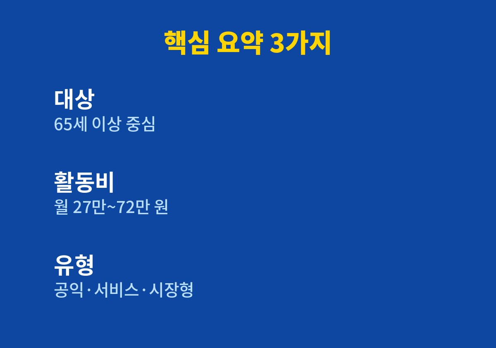
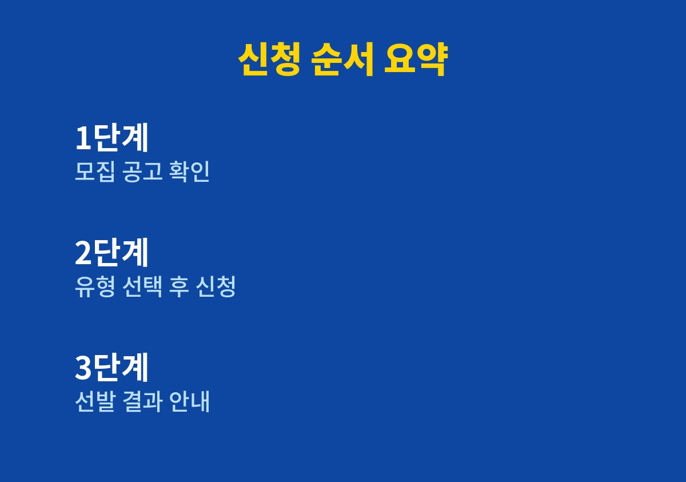

노인일자리 신청 방법에 대해 바로 따라 할 수 있도록 핵심부터 정리한다.
이 글은 65세 이상 부모님이나 본인의 일자리를 알아보는 분을 위해 쓴 글이다.
2026년 11월 기준으로 내가 직접 찾아보며 정리한 내용이다.
가족과 이야기하다 어르신이 활동비를 받으며 일할 수 있는 사업이 있다는 말을 듣고 궁금해서 찾아보았다.
노인일자리 및 사회활동 지원사업은 어르신이 지역에서 일하거나 활동하고 그 대가로 활동비를 받도록 돕는 사업이다.
크게 공익활동, 사회서비스, 시장형 같은 유형으로 나뉘어 소개되고 있다.
유형마다 하는 일과 받는 금액, 활동 시간이 달라서 이름만 보고 판단하면 헷갈리기 쉽다.
올해 사업 규모는 115만 개로 역대 최대 수준까지 늘었다고 소개되었다.
요즘에는 일부 지자체가 2027년 사업을 맡을 수행기관을 먼저 공개 모집하고 있다.
참여자 모집은 그 뒤에 지자체별로 따로 이어지는 경우가 많아서 시기가 지역마다 다를 수 있다.
그래서 지금부터 사는 지역의 소식을 살펴보는 것만으로도 준비가 한결 쉬워진다.
나는 이런 제도를 알아둔 사람과 모르는 사람의 차이가 결국 시기를 맞췄는지에서 갈린다고 느꼈다.
가장 먼저 보는 기준은 연령이다.
나이는 만 나이 기준인지 해당 연도 기준인지에 따라 달라질 수 있어 공고문에서 따로 확인해야 한다.
공익활동은 65세 이상 어르신을 중심으로 안내되는 경우가 많다.
소득과 재산, 기초연금 수급 여부 같은 조건은 유형과 지역에 따라 다르게 적용될 수 있다.
그래서 세부 기준은 내가 임의로 단정하지 않고 공식 공고에서 확인해야 한다.
몸 상태와 하루에 낼 수 있는 시간을 먼저 생각하는 것이 좋다.
활동비가 높은 유형일수록 활동 시간이 길거나 요구되는 역량이 있는 편이다.
건강 상태와 이동 거리를 함께 따져서 오래 이어 갈 수 있는 활동을 고르는 것이 낫다.
처음부터 욕심내기보다 부담이 적은 활동으로 시작해 보고 맞으면 이어 가는 방법도 있다.
가족과 함께 의견을 나누면 어르신도 훨씬 편하게 결정할 수 있다.

유형별 활동비는 월 27만 원에서 72만 원 범위로 정리된 자료가 많았다.
공익활동형은 65세 이상 기준 월 29만 원 안팎으로 소개되고 있다.
다만 정확한 금액은 해마다 달라질 수 있어 신청 전에 공고로 다시 확인해야 한다.
활동비는 정해진 활동 시간을 채웠을 때 지급되는 것이 일반적이어서 시간 조건도 함께 보아야 한다.
같은 이름의 사업이라도 지역과 수행기관에 따라 모집 인원과 활동 내용이 다를 수 있다.
| 항목 | 내용 |
|---|---|
| 대상 | 65세 이상 중심(유형별로 상이) |
| 활동비 | 월 27만~72만 원 범위 |
| 유형 | 공익활동·사회서비스·시장형 |
| 신청처 | 관할 주민센터·수행기관 |
| 신청 기간 | 지자체 공고 확인 |
표의 내용은 검색으로 확인한 범위만 담았고, 비어 있는 부분은 공식 공고에서 채워야 한다.

1. 거주 지역 시청이나 주민센터 공고에서 올해 참여자 모집 일정을 확인한다.
2. 공익활동, 사회서비스, 시장형 중 내 건강과 시간에 맞는 유형을 고른다.
3. 대상 연령과 소득·재산 조건을 공고문에서 직접 확인한다.
4. 신분증 등 필요 서류를 챙겨 주민센터나 수행기관에 신청서를 낸다.
5. 선발 결과와 활동 시작 일정을 안내받고 교육 일정을 확인한다.
신분증과 통장 사본 정도는 미리 챙겨 두면 좋다.
필요한 서류는 수행기관마다 다를 수 있어 방문 전에 전화로 확인하는 편이 안전하다.
가능하면 가족이 함께 방문하거나 동행해 설명을 같이 듣는 것이 좋다.
신청한다고 모두 바로 활동하게 되는 것은 아니고, 선발 기준에 따라 순서가 정해진다.
그래서 모집 공고가 열리는 시기를 놓치지 않는 것이 가장 중요하다.
개인정보를 대신 신청해 주겠다며 요구하는 곳은 조심해야 한다.
부모님 이야기로 시작한 글이지만 정리하고 보니 주변 어르신 모두에게 쓸모 있는 제도였다.
가까운 주민센터에 한 번 문의해 보시길 권한다.
※ 2026년 11월 기준 공개된 정보를 정리한 글이며, 정확한 대상 요건·금액·신청 기간은 복지로·정부24·관할 주민센터의 공식 공고를 확인하시길 바란다.